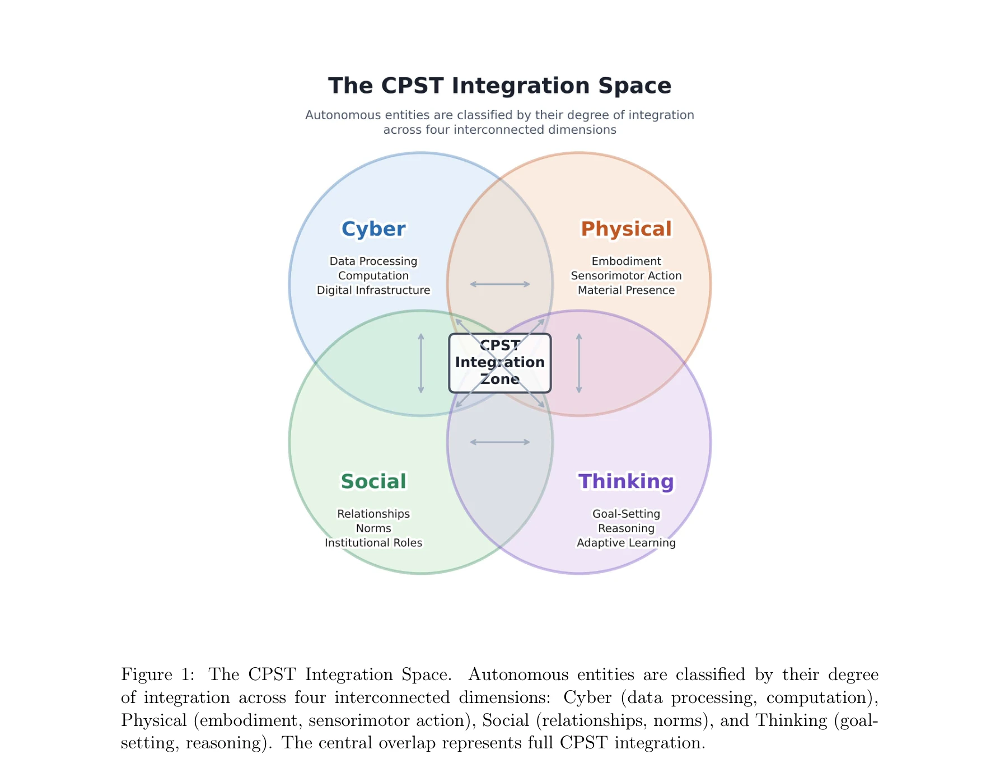
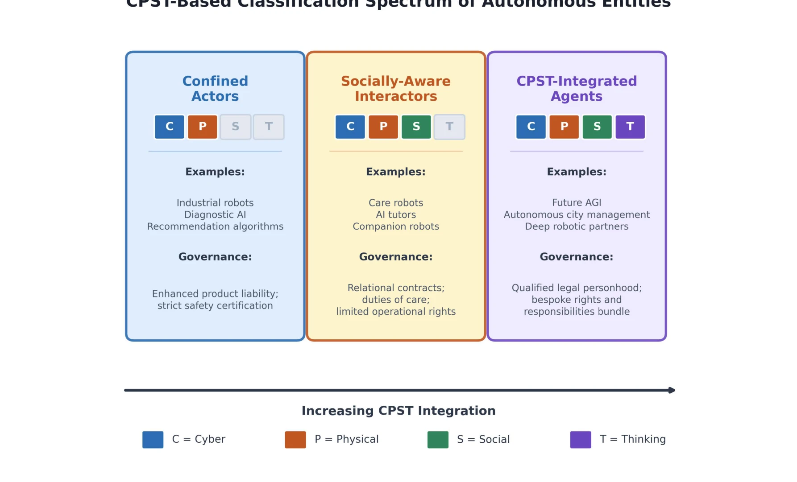

저자: Huansheng Ning, Jianguo Ding | 날짜: 2026-04-07 | DOI: 10.48550/arXiv.2604.05568

Figure 1: The CPST Integration Space.
CPST(Cyber-Physical-Social-Thinking) 공간 이론에 기반한 로봇과 AI 에이전트의 분류 프레임워크를 제안하여, 기존의 '도구' vs '인격' 이분법적 법적 범주의 한계를 극복하고 비례적 거버넌스를 위한 온톨로지를 제시한다.

Figure 2: CPST-Based Classification Spectrum of Autonomous Entities.
Figure 1: The CPST Integration Space.
총평: 본 논문은 AI 및 로봇 거버넌스의 근본적 온톨로지 문제를 CPST 이론으로 해결하려는 야심찬 시도로, 기존 위험도/안전성 중심의 규제에서 엔티티 특성 중심으로의 패러다임 전환을 제시한다. 다만 평가 지표의 정량화, 국제 표준화의 현실성, 신기술 추적 메커니즘에 대한 더 깊은 논의가 필요하다.